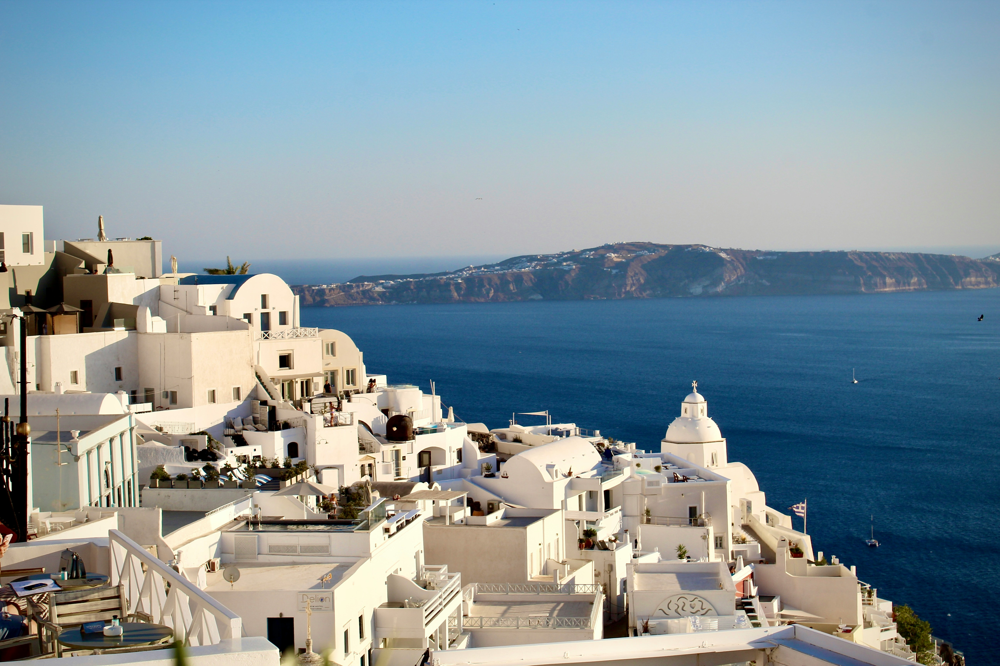
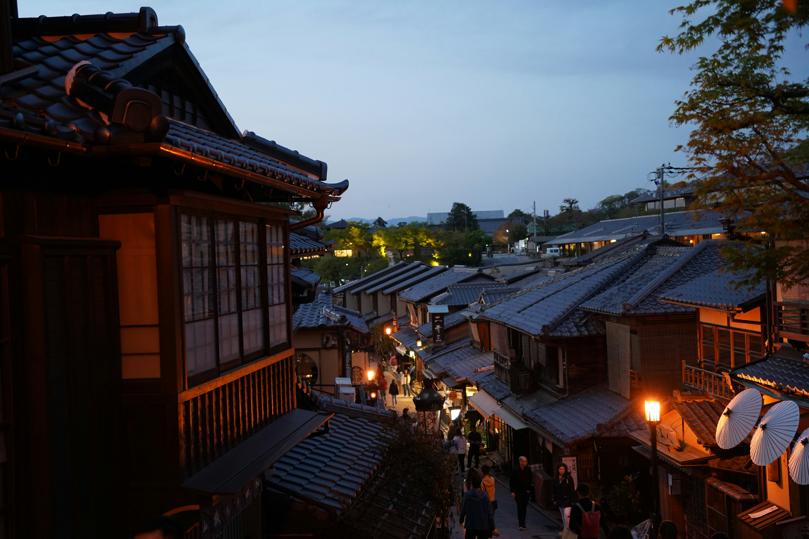

GREECE · COASTAL ESCAPE
Santorini, Slowly
Wander whitewashed lanes, discover quiet coastal corners and let Mediterranean evenings unfold at their own pace.
Find your island escape ↗FOR THE CURIOUS · FOR THE FREE
Beyond the familiar is a world worth discovering. Find extraordinary landscapes, meaningful encounters and journeys that stay with you.
THOUGHTFUL TRAVEL · WORLDWIDE POSSIBILITIES
A DIFFERENT KIND OF TRAVEL
At OFFGRID, travel is about more than ticking places off a list. It is about taking the scenic route, discovering unfamiliar cultures and making room for experiences you never expected. We bring inspiration and thoughtful planning together to help you find a journey that feels like your own.
A WORLD OF POSSIBILITIES

GREECE · COASTAL ESCAPE
Wander whitewashed lanes, discover quiet coastal corners and let Mediterranean evenings unfold at their own pace.
Find your island escape ↗
JAPAN · CULTURAL DISCOVERY
Explore traditional streets, peaceful gardens and centuries of culture in a city rich with detail.
Discover another side of Japan ↗
CANADA · WILD LANDSCAPES
Find mountain horizons, glacial lakes and the kind of open space that invites you to slow down.
Explore the wilderness ↗THE OFFGRID APPROACH
Every traveler has a different idea of the perfect escape. Our approach starts with what matters to you.
01
Start with your interests, travel style and the experiences you want to take home.
02
Look beyond familiar attractions and make space for local culture, nature and unexpected discoveries.
03
Turn inspiration into a considered itinerary with room for discovery and a pace that suits you.
STEP OUTSIDE THE EXPECTED
New landscapes. Different perspectives. A little more room to discover what the world has waiting for you.
YOUR NEXT CHAPTER
Whether you dream of a remote mountain trail, a quiet coastline or a city full of stories, begin with the experience you want to have.
START PLANNING YOUR ESCAPE ↗